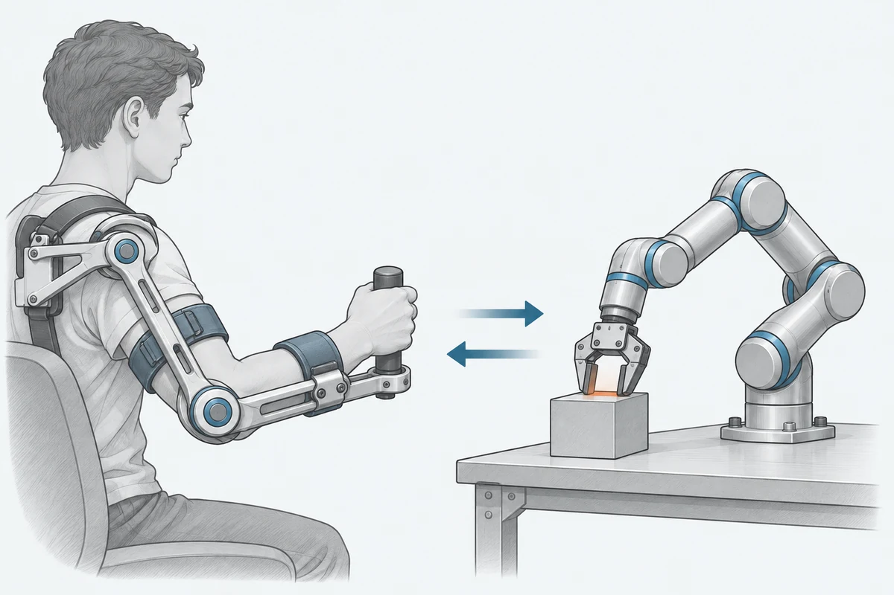

七自由度力反馈外骨骼与双边遥操作 Bilateral teleoperation with a seven-degree-of-freedom haptic exoskeleton
以低成本、可灵活安装的七自由度力反馈外骨骼为主端，构建与 Flexiv 机械臂的双边遥操作平台，集成主从运动映射、接触力反馈、柔性重力补偿及多模态示教采集。A low-cost, seven-degree-of-freedom haptic exoskeleton with configurable mounting serves as the master device for bilateral teleoperation of a Flexiv arm. The platform integrates motion retargeting, contact-force feedback, flexible-link gravity compensation and multimodal demonstration capture.

停止施力后，外骨骼为什么仍有输出力矩？Why can the exoskeleton still produce torque when the operator stops pushing?
从力信号定位撤力Locate the release in the force signal
在同一段日志中对照原始力／力矩与补偿后的输入，定位操作者撤力的时间。手柄姿态变化会改变重力在传感器坐标系中的投影，因此仅凭原始某一轴是否回零，不能确定操作者是否仍在施力。The raw wrench and compensated input give a time reference for load removal. A change in handle orientation also changes the projection of gravity into the sensor frame, so a raw component can remain nonzero after the operator stops applying force.
沿控制指令追踪余量Trace the remaining torque command
沿同一时间轴查看速度参考、位置反馈项和补偿力矩。主端仍需抵消自身重力，撤去外力后总力矩不必为零。值得追踪的是哪些分量仍沿原来的运动方向施加力矩，以及它们持续到何时。Velocity references, position-feedback torque and compensation terms can be inspected on the same timeline. Gravity support remains necessary after release. The diagnostic question is which terms still drive the joint in the previous direction and for how long.
对照关节实际运动Compare the measured joint response
将指令变化与编码器记录的关节运动叠看，可区分指令仍在输出和指令变化后机构仍在运动两种情况。后一种现象能够缩小排查范围，单凭这条轨迹还不足以判定是结构柔顺性还是其他机械因素。Comparing the command with encoder motion distinguishes a continuing drive command from motion that persists after the command changes. The latter narrows the diagnosis, though the trace alone cannot separate structural compliance from other mechanical effects.
低成本结构与灵活安装Low-cost construction and configurable mounting
外骨骼采用关节电机与打印结构件组合的低成本构型，可在铝型材支架上采用底部安装、顶部吊装或侧向安装。通过调整基座位置与朝向，适配不同工位的操作空间及手臂活动范围，便于按实验需求重新布置遥操作平台。The exoskeleton combines joint motors with 3D-printed structural components in a low-cost configuration. Its base supports bottom, overhead and side mounting on an aluminium-extrusion frame. Adjustable base placement and orientation accommodate different workstation layouts and arm workspaces, allowing the teleoperation setup to be reconfigured for different experiments.
主从位姿映射与力反馈Bilateral motion and force mapping
牵头平台搭建与真机联调，完成主端运动学建模、主从位姿映射、六维导纳控制与重力补偿。系统将手柄位姿转换为机械臂末端目标位姿，并通过外骨骼向操作者反馈从端接触力与力矩。Led platform development and hardware integration, including exoskeleton kinematics, master–slave pose mapping, six-dimensional admittance control and gravity compensation. Handle poses define target end-effector poses, while contact forces and torques at the robot are returned to the operator through the exoskeleton.
柔性建模与重力补偿Flexible-link modelling and gravity compensation
针对外骨骼结构在自重与末端负载作用下的挠曲，建立准静态柔性模型，并利用多姿态力传感器数据标定柔度、安装旋转和测量零偏。运行时根据关节角与柔性参数估计传感器实际朝向，修正工具重力在传感器坐标系中的投影，完成六维力／力矩补偿。A quasi-static flexible-link model represents deflection under link weight and the end-effector payload. Force-sensor measurements across multiple poses calibrate compliance, mounting rotation and measurement bias. At runtime, joint angles and calibrated compliance estimate the sensor orientation, correcting the projection of tool weight into the sensor frame for six-axis force/torque compensation.
双指接触检测与抓力调节Dual-fingertip contact detection and grasp-force control
集成主端力反馈夹爪与从端千觉双指视触觉夹爪，开发夹爪开合控制、指尖接触检测与目标抓力调节，并将从端抓取力反馈至主端夹爪。Integrated a master-side haptic gripper with a slave-side Xense two-finger visuotactile gripper. Developed opening and closing control, fingertip contact detection and grasp-force regulation, with slave-side grasp forces rendered at the master gripper.
多模态记录与完整性检查Multimodal recording and integrity checks
基于 Python 多进程与共享内存构建控制和采集框架，关联记录多视角 RGB-D、指尖触觉、六维力／力矩、夹爪及机械臂状态。图像由独立进程异步写入，配套完整性检查记录丢帧、写入错误和异常结束原因，支持故障追踪与数据筛查。A Python multiprocessing framework uses shared memory for control and acquisition, associating multi-view RGB-D, fingertip tactile images, six-axis force/torque, gripper state and arm state. Separate processes write images asynchronously. Integrity checks record dropped frames, write errors and abnormal termination to support fault diagnosis and dataset screening.